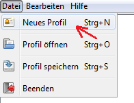
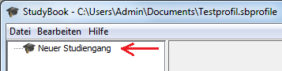
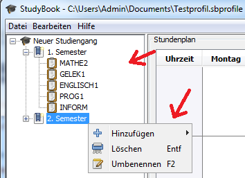
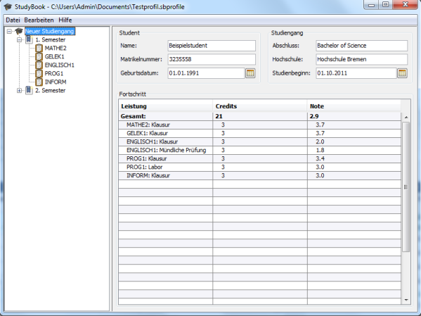
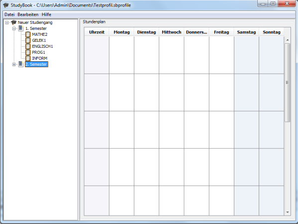
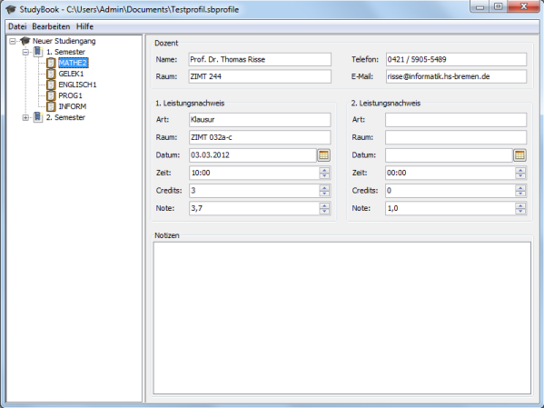

Willkommen bei StudyBook
StudyBook ist ein Organizer-Programm, das Ihnen als Student helfen soll, immerzu einen aktuellen
Überblick über Ihre erbrachten Studienleistungen, Termine und anderen studienrelevanten Informationen beizubehalten.
StudyBook ist kostenlos, plattformunabhängig und bietet Ihnen eine Vielzahl von nützlichen Funktionen, die Ihnen hier
näher erläutert werden.
1. Ersteinrichtung
Damit Sie gleich die Vorzüge des Programms auskosten können, müssen Sie zunächst einmal ein Profil erstellen. Hierzu
gehen Sie in den Menüpunkt "Datei->Neues Profil" und können nach Eingabe eines Benutzerprofilnamens und Auswahl eines
entsprechenden Speicherorts ein neues Profil erstellen.

Ist dies geschehen, können Sie nun entweder mittels Rechtsklick auf der linken leeren Schaltfläche oder mithilfe des
Menüs "Bearbeiten" einen neuen Studiengang hinzufügen. Es sollte sich nun ein Eintrag namens "Neuer Studiengang" in der
linken Schaltfläche befinden, womit Sie die Ersteinrichtung des Programms abgeschlossen haben.

2. Programmnavigation

Bei der sich auf der linken Seite befindlichen Schaltfläche handelt es sich um eine Baumstrutur, mittels derer Sie die
Hauptnavigation des Programms vollziehen können. Die Wurzelemente dieses Baumes bilden dabei die Studiengänge, hierin enthalten die Semester und in
den Semestern wiederum enthalten, die Module. Mit einem einfachen Mausklick auf eines dieser Baumelemente gelangen Sie in die Verwaltungsoberfläche
des ausgewählten Studiengangs, Semesters oder Moduls, die auf der rechten Seite des Programms sichtbar wird.
Sie können vorhandene Studiengänge, Semester und Module umbenennen und neue hinzufügen. Dies geschieht über ein Kontextmenü,
das bei einem Rechtsklick auf das jeweilige Baumelement erscheint. Es werden Ihnen dabei alle möglichen Aktionen, die Sie ausüben
können, angezeigt. So ist es beispielsweise erst dann möglich ein neues Semester anzulegen, wenn Sie einen entsprechenden Studiengang ausgewählt
haben. All diese Aktionen können Sie übrigens auch wahlweise über das Menü "Bearbeiten" ausführen oder gleich mit den in den Menüs hinterlegten
Tastenkombinationen arbeiten.
3. Studiengangverwaltung

Die Studiengangverwaltung beinhaltet Eingabefelder, in die Sie wahlweise allgemeine Daten über sich und den Studiengang eintragen können.
Die Tabelle darunter beinhaltet eine Gesamtübersicht über all Ihre erbrachten Leistungsnachweise und der daraus resultierenden Gesamtnote.
Diese Informationen bezieht die Studiengangverwaltung aus den in der Modulverwaltung eingetragenen Leistungsnachweisen.
4. Semesterverwaltung

Mittels der Semesterverwaltung ist es Ihnen möglich, einen Stundenplan anzufertigen. Dieser Stundenplan soll dabei nicht unbedingt nur
als Vorlesungsplan für das jeweilige Semester angesehen werden, sondern kann von Ihnen durchaus auch mit Freizeitaktivitäten gefüllt werden.
5. Modulverwaltung

Die Modulverwaltung gestattet Ihnen die Aufnahme von Kontaktdaten des modulverantwortlichen Dozenten.
Damit in der Studiengangverwaltung die Gesamtübersicht der erbrachten Leistungsnachweise eingesehen werden kann, müssen Sie mittels der Modulverwaltung eine
Eingabe von mindestens einem Leistungsnachweis in Form eines Namens (Art), eines Credits-Wertes und einer erzielten Note tätigen. Weiterhin
ist anzumerken, dass ein Leistungsnachweis erst dann in der Gesamtübersicht in der Studiengangverwaltung angezeigt wird, wenn die eingetragenen
Credits einen Wert größer 0 und die Note einen Wert kleiner gleich 4.0 hat.
Randinformationen (Raum, Datum, Zeit) zu den jeweiligen Leistungsnachweisen können von Ihnen auch eingetragen werden.
Außerdem können Sie sich zu jedem Modul Notizen machen.
Sollten Ihnen entfallen sein, wie Sie das Programm zu bedienen haben, so können Sie diese Hilfe jederzeit über das Menü "Hilfe->Hilfe" erreichen.
Und wenn Sie schon gerade dabei sind, können Sie den Entwickler dieses Programms Tribut zollen, indem die Sie über das Menü "Hilfe->über" einfach ihre Namen ansehen.